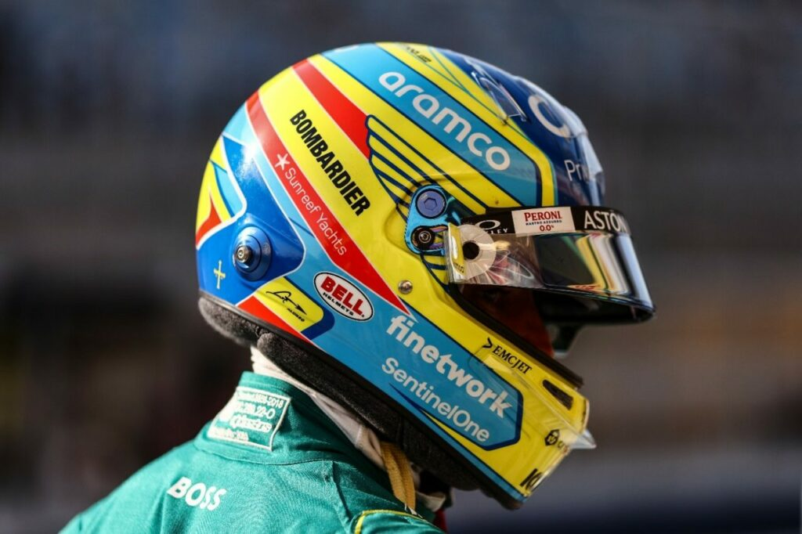
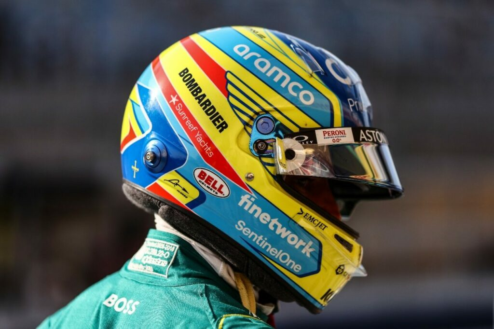

Hi üëã
Über mich:
Ich heisse Ramon Hufschmid und lebe im schönen Oberbaselbiet im kleinen Dorf Rothenfluh. Ich bin 16 Jahre alt und lebe zusammen mit meinen Eltern und meinem Hund namens "Riva". Ausserdem haben wir eine Katze, Hühner und Wachteln. Unsere Familie hat also fast schon einen kleinen Bauernhof!
Begeistert bin ich vorallem am Motorsport. Selber mache ich auch gerne bei Online-Rennen mit. Abseits des Motorsports programmiere ich auch gerne Webseiten, so wie diese! Ich möchte vorallem neue Frameworks und Libraries entdecken. Ich bin momentan an drei verschiedenen Projekten am Arbeiten. Folgende sind hier zu sehen:

Aktuelle Webseite
In diesem Projekt versuche ich vor allem meine Kompetenzen in purem HTML und CSS zu erweitern. Dabei versuche ich vor allem eine möglichst ansprechende Seite zu gestalten, auf welcher ich auch in Zukunft aufbauen könnte.
Geschätzter Aufwand: 10PT

devNotes
Ein eigenes, noch relativ junges Projekt von mir heisst devNotes. Es soll eine Webseite werden, bei welcher man sich Notizen und ToDo-Listen erstellen kann. Für diese Webseite ist in Zukunft geplant, dass sie mit einem Backend ergänzt wird, damit sich Benutzer auch einloggen können und Ihre Notizen auf allen Geräten haben.
Geschätzter Aufwand: 30PT
Brändi Dog
Brändi Dog ist noch ein sehr fernes Projekt, welches ich aber bereits gestartet habe. Da meine Familie und ich das Brettspiel Brändi Dog sehr gerne spielen, hatte ich die Idee, ein eigenes Brändi Dog spiel auf einer Webseite zu programmieren. Diese Webseite stelle ich aber erst fertig, wenn ich bereits viel Erfahrung in der Webentwicklung habe.
Geschätzter Aufwand: 100PT

IRacing
Ausserdem möchte ich für die Online-Racing Plattform ein Team gründen, damit ich Langstreckenrennen fahren kann. Dies kann man in IRacing sehr gut machen. Um mein Team etwas professioneller zu machen, möchte ich eine Informations-Webseite zu dieser ertsellen.
Geschätzter Aufwand: 150PT
Ansonsten spiele ich auch sehr gerne Tennis in meiner Freizeit. Was ich sonst noch so in meiner Freizeit gerne mache und welche Kompetenzen ich bereits gelernt habe in der IT-Welt erfährt man unter: About.